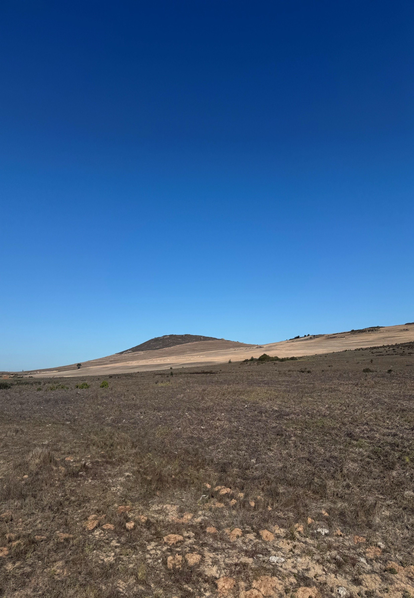
- CBA: Critical Biodiversity Area
- CBD: Convention on Biological Diversity
- CBMP: Circumpolar Biodiversity Monitoring Program
- CFR: Cape Floristic Region
- DEA&DP: Department of Environmental Affairs and Development Planning (Western Cape)
- EIA: Environmental Impact Assessment
- ESA: Ecological Support Area
- GBF: Global Biodiversity Framework
- GIS: Geographic Information System
- IDP: Integrated Development Plan
- KMGFB: Kunming-Montreal Global Biodiversity Framework
- NGO: Non-Governmental Organisation
- SAB: State of the Bay
- SANBI: South African National Biodiversity Institute
- SBM: Saldanha Bay Municipality
- SBWQT: Saldanha Bay Water Quality Trust
- SDF: Spatial Development Framework
- SDG: Sustainable Development Goal
- UN: United Nations
- WCBSP: Western Cape Biodiversity Spatial Plan
- WCNP: West Coast National Park

Table of Contents
The Saldanha Bay Municipality has a commitment of following the Kunming-Montreal Global Biodiversity Framework (GBF) and its vision of halting and reversing biodiversity loss by the year 2030 (SBM 2025). Saldanha's Spatial Development Framework (SDF) 2025-2030 makes reference to the GBF to reinforce global targets through local spatial and environmental objectives. Addressing biodiversity loss at a local level requires a clear protocol that well aligns with international and national commitments. The SDF emphasizes sustainable development that safeguards critical ecosystems by protecting 30% of lands and waters, restoring ecosystems, and reducing pollution, just as the GBF targets and relevant Sustainable Development Goals (SDGs) (SBM 2025).
The Saldanha Bay Municipality Spatial Development Framework 2025-2030 (SBM 2025) reinforces these commitments at a municipal level by prioritising biodiversity conservation in their land-use planning. The SDF recognises the municipality's global and national obligations and has set forth strategies to "support and strengthen the biodiversity and conservation status of the area" (SBM 2025). The key directives include enhancing the protection of threatened ecosystems, especially in coastal areas and areas with hills, establishing ecological corridors to aid with climate change adaptation, and to avoid incompatible development in sensitive habitats (SBM 2025). This can be seen in the SBM-SDF Final Paper, where the SDF stipulates no urban development should occur in Critical Biodiversity Areas (CBAs) or protected areas, and that any development that occurs near endangered vegetation types must be carefully managed or offset. These local policies align with the KMGFB's Target 1 (1.1), which calls for spatial planning to be biodiversity-inclusive. The policies also align with Target 3's focus on conserving at least 30% of lands through local protected area expansion and stewardship initiatives (CBD 2022).
Robust monitoring is needed to ensure that these goals are met and to enable adaptive management in Saldanha Bay Municipality. The UN CBD stresses that "monitoring, including through the use of indicators, is of fundamental importance in addressing biodiversity loss", as it provides the basis for assessing if policy actions are effective or not (CBD 2022). Biodiversity indicators merge complex ecological data into information that policymakers can act on, therefore building a bridge between science and policy (CBD 2022).
The monitoring protocol for Saldanha Bay Municipality is designed to fulfil that role. It creates a structured approach for tracking the state of local biodiversity, the pressures affecting it, and the management responses over time. Having a protocol ensures the alignment of the KMGFB global indicators and the SDF 2025-2030 targets; Saldanha Bay's local actions can contribute to national reporting such as South Africa's CBD reports and Sustainable Development Goals. This protocol is organised into sections that cover the local biodiversity context, indicator selection, data collection methods, reporting, and governance. Ultimately, this document provides a framework that is policy-ready to guide biodiversity monitoring in Saldanha Bay, while utilizing both global frameworks and the municipality's own development visions.
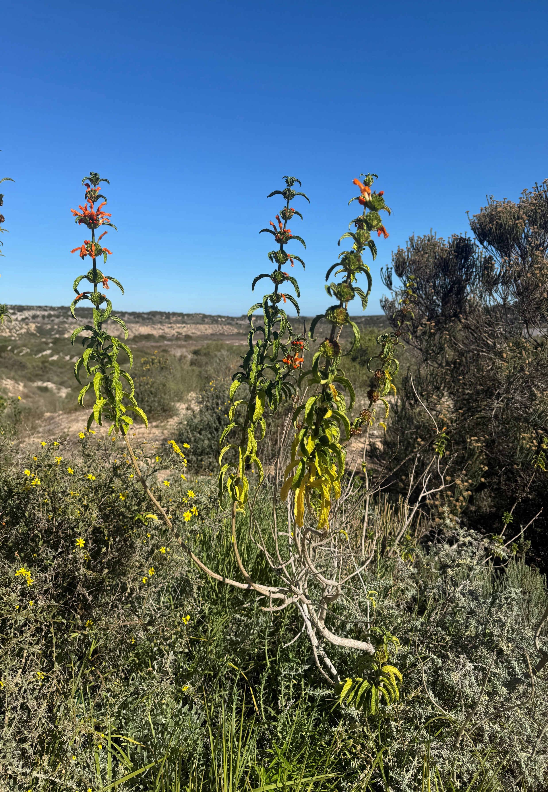
Ecological Context
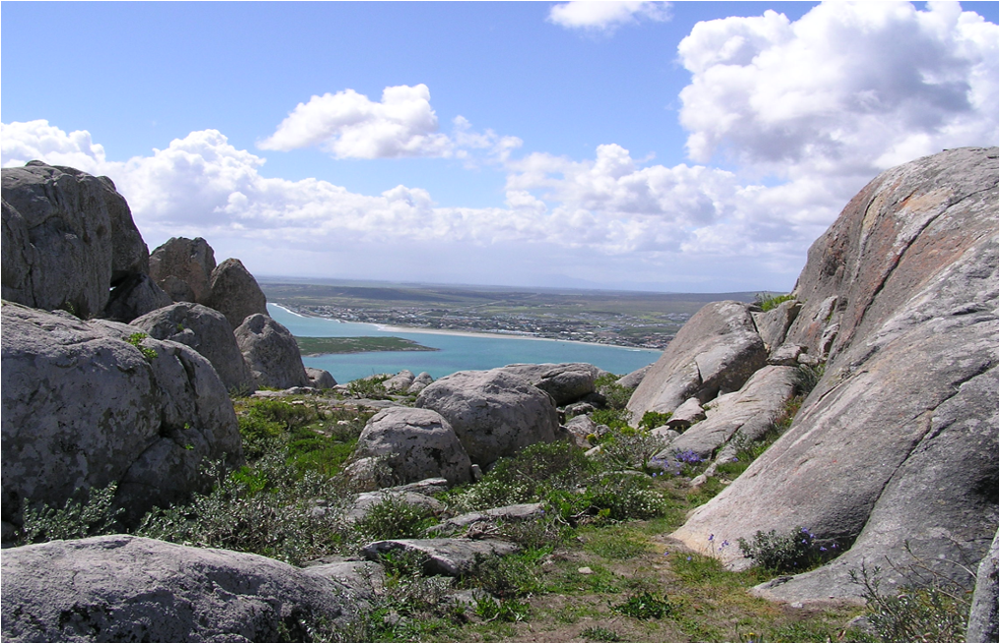
Saldanha Bay Municipality is located within the Cape Floristic Region and has a diverse range of ecosystems, from marine waters and coastal lagoons to terrestrial strandveld shrublands. The Langebaan Lagoon, as shown in Figure 1, is one of South Africa's few large tidal lagoons and is encompassed by the West Coast National Park. The lagoon supports extensive mudflats and salt marshes that host over 250 bird species annually (WCBSP 2017). Surrounding the lagoon are coastal dune systems and strandveld vegetation, which form part of the endemic-rich fynbos biome. These lowland fynbos communities harbour many locally endemic plant species that are adapted to soils that are poor in nutrients and periodic fires (SANParks 2025). According to the Western Cape Biodiversity Spatial Plan (WCBSP) (2017), many of these vegetation types are classified as endangered or critically endangered due to past habitat loss. For example, the Limestone strandveld currently has a limited distribution in Saldanha and has experienced severe fragmentation from development, making the patches that remain high priority for conservation. The municipality also includes patches of renosterveld grassland, wetlands along river courses, and offshore islands such as Marcus Island which supports seabird colonies (WCBSP 2017).
Critical Biodiversity Areas
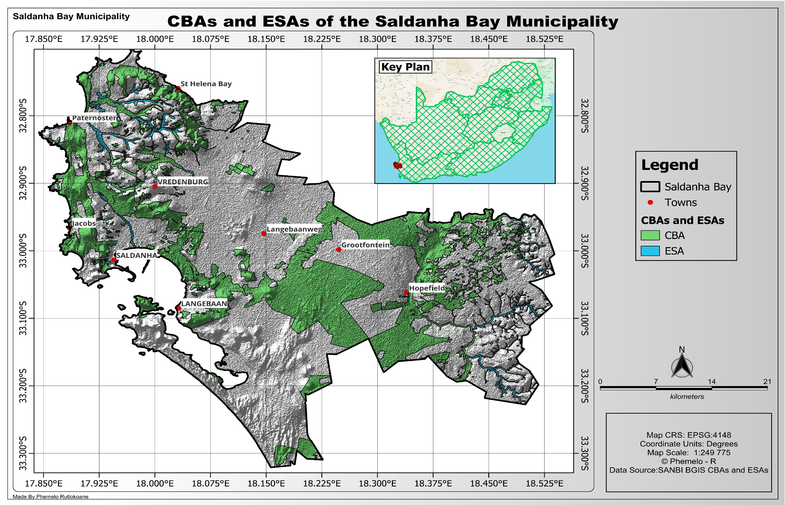
Conservation planning in the region has identified CBAs and Ecological Support Areas (ESAs) that span Saldanha Bay and neighbouring municipalities (WCBSP 2017). These areas are considered to have high biodiversity values containing threatened ecosystems or key ecological processes that need to be kept safe to maintain ecosystem functioning. Many CBAs in Saldanha Bay occur in the coastal lowlands and along the "Climate change corridor" that runs north-south through the municipality. It is important to note that the southeastern part of the municipal area has unprotected CBA remnants of lowland fynbos, which form a linkage between the coast and inland mountain ranges (SBM 2025).
The SDF 2025-2030 emphasises the need to protect these fragments and build conservation corridors to connect habitats by linking the West Coast National Park with inland reserves and the Greater Cederberg Biodiversity Corridor (SBM 2025). If the municipality can aim to retain corridors that are at least 300 m wide in lowland fynbos, then wildlife and plant propagules will be able to move freely between them as climate conditions change (SBM 2025). The West Coast Biosphere Reserve has been marked for expansion over the northern part of the municipality to support landscape-scale connectivity (SBM 2025).
Key Pressures on Biodiversity
Even though Saldanha Bay is ecologically significant, it still faces intense biodiversity issues that stem from habitat loss, invasive species, altered fire regimes, and pollution/climate change. The rapid development of the coast and port expansion often threaten to fragment or destroy remaining natural habitats, which includes some of the endangered vegetation types like Saldanha Flats Strandveld and Saldanha Granite Strandveld. These unique ecosystems are recognised nationally as important ecosystems, and they are classified as endangered/vulnerable. Their loss would undermine South Africa's conservation targets for ecosystem representation.
Invasive Alien Species
Invasive species such as Acacia and Eucalyptus trees in terrestrial areas, and other marine species that got introduced via shipping, worsen the issues in the municipality by degrading native ecosystems. Over 9,000 km² of fynbos in the region has been overrun by alien plants (SBM 2025). This reduces biodiversity and alters fire regimes. Saldanha Bay's own Invasive Species Control Plan states that many high-value sites with threatened vegetation are at risk of invasions and will be degraded beyond repair if those invasives are not controlled. The distribution of terrestrial invasive plants is illustrated in Figure 3 below as a heatmap.
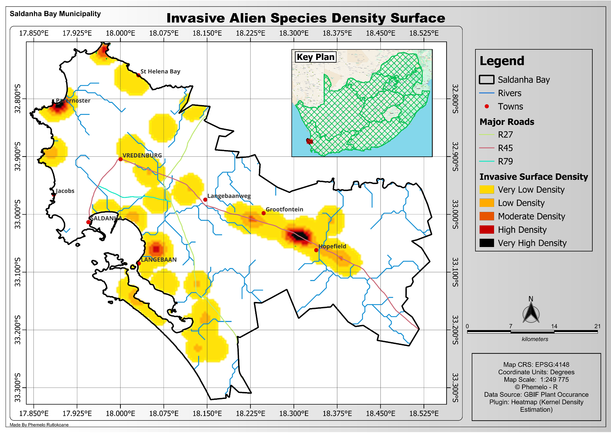
Altered Fire Regimes
The municipality's fire-prone fynbos requires periodic burns for regeneration, but in recent years, there have been escalations in wildfire frequencies in some areas of the municipality. A 10-year fire map shown on Figure 4 below reveals the shifting burn patterns in the municipality. Not only do these burns threaten the biodiversity, but each burn scar overlaps with rivers and wetlands, which risks sediment and nutrient runoff into aquatic systems, affecting water purification and flood attenuation services.
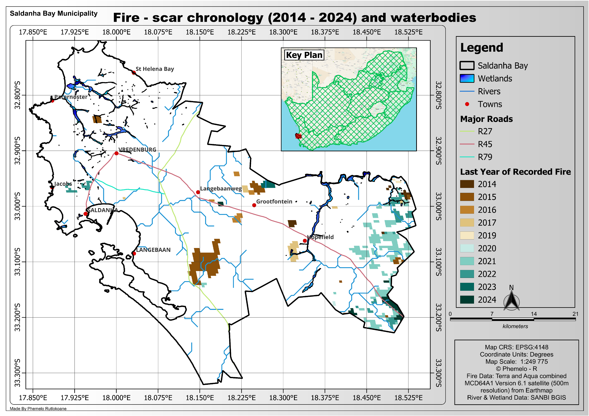
Pollution and Climate Change
Heavy industrial activity and historical mining contribute to pollution loads, while climate change worsens drought and the rise in sea levels. The entirety of the Saldanha Bay Langebaan Lagoon system is classified as vulnerable, mainly due to anthropogenic activities such as mining, pollution, coastal development, and invasive species introduction via shipping (SBM 2025).
Urban and Industrial Development: The bay's location and deep harbour have led to major industrialisation. The Saldanha Bay Industrial Development Zone (SBIDZ) and the extension of the port have driven land change and habitat loss (SBM 2025). The towns of Saldanha and Vredenburg have been growing and are planned to form a development corridor. If proper management is not present, this growth can encroach on the neighbouring natural areas. Even the SDF acknowledges that "competing uses within biophysical environments (renewable energy, agriculture, mining, industrial development vs. conservation) must be reconciled cautiously" (SBM 2025).
These pressures as a whole are the drivers of biodiversity decline and warrant the need for proactive monitoring. The SDF 2025-2030 makes mention of "environmental sustainability alongside economic growth", which will require proper monitoring of ecological health and enforcement of land-use guidelines. This protocol responds by identifying suitable indicators for the state of biodiversity, the pressures acting on it, and the responses made by authorities.
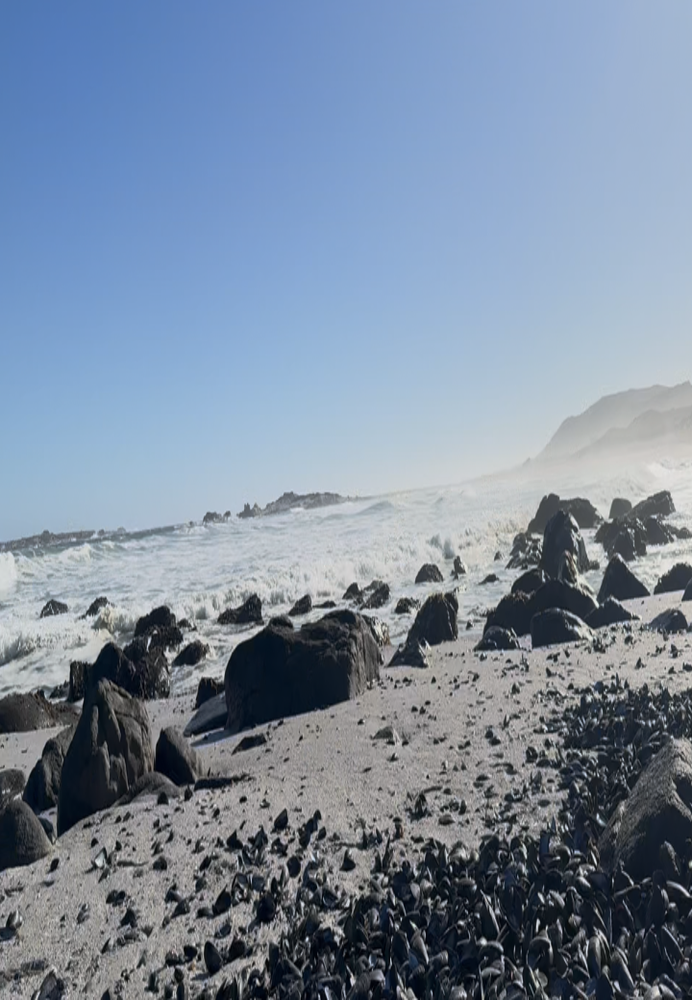
To track biodiversity and guide management effectively, this protocol adopts a set of indicators organised under the framework of State-Pressure-Response. This approach is taken from the widely used Driver-Pressure-State-Impact-Response (DPSIR) model of environmental reporting (5). According to the DPSIR, Driving forces such as economic activities lead to Pressures (e.g. pollutants) that alter the State of the environment, causing Impacts on ecosystems and on health, to which society prepares Responses (e.g. policies and conservation targets). Here we focus on just the State, Pressure, and Responses categories because they directly inform local management interventions in the SBM.
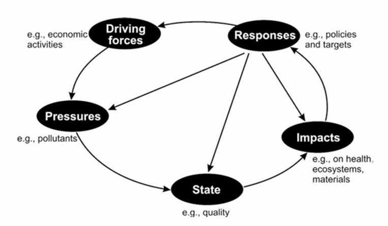
3.1 Indicator Matrix (Table 1)
The indicators mentioned in Table 1 below allow the SBM to measure progress towards its ecological objectives. These indicators connect local action to global objectives. Each data collected in SBM, whether it is a percentage of the land protected, a trend in a specific endemic plant's population, or the number of hectares that have been cleared of invasive plants, has a place in the broader picture of biodiversity conservation.
| # | Indicator | SPR | Metric / Units | KMGBF Target | Data Source & Cycle | Municipal Use |
|---|---|---|---|---|---|---|
| 1 | Extent of Natural Ecosystems | State | km² & % of municipal area remaining natural (by ecosystem type) | Target 1 — "Loss close to zero"; Headline A.2 | SANLC 2020; Landsat/Sentinel annual reanalysis; development approvals | Spatial-planning trigger; informs "no-go" zoning |
| 2 | Vegetation Condition / ΔNDVI | State | NDVI change (≤ –0.05, stable, ≥ +0.05) and % area with significant decline | Targets 1 & 2 (ecosystem integrity & restoration effectiveness) | Landsat 8/9 or Sentinel-2 composites; annual (post-fire season) | Flags post-fire recovery failures; restoration site selection |
| 3 | Threatened & Indicator-Species Trends | State | Population index or breeding success trend (%) | Target 4 — Red List Index | Field surveys (CapeNature/SANBI protocols); 1–3-year cycle | Species-specific management; national Red List updates |
| 4 | Habitat Conversion Rate | Pressure | ha yr⁻¹ of natural land rezoned/cleared | Target 1 — Prevention of net loss | Change detection from SANLC & municipal approvals; annual | Enforcement, EIA conditions, biodiversity offsets |
| 5 | Invasive Alien Species Incidence & Extent | Pressure | (a) # new species/events yr⁻¹; (b) total invaded ha | Target 6 — 50% cut in introductions | SAPIA/GBIF records, field mapping, remote-sensing density surfaces; annual | Early-warning, control-team deployment, Working-for-Water funding bids |
| 6 | Fire Frequency & Return Interval | Pressure | Mean fire return interval (years) vs. ecological benchmark; total ha burnt yr⁻¹ | Target 8 (reduce climate-driven impacts, enhance resilience) | MODIS/VIIRS fire products, municipal incident reports; annual GIS analysis | Fire-management strategy, controlled-burn scheduling |
| 7 | Water-Quality Index (Wetlands/Lagoon) | Pressure | Nutrient (TP, TN) & contaminant levels vs. thresholds | Target 7 — Pollution below harmful levels; SDG 6.3.2 | "State of the Bay" monitoring program; quarterly sampling | Wastewater upgrades, wetland buffer protection |
| 8 | Protected & Conserved Area Coverage & Connectivity | Response | % land/sea under PA or OECM; corridor intactness score | Target 3 — "30×30" | CapeNature & SANParks PA layer; stewardship database; annual | Gap-analysis, stewardship outreach, corridor negotiations |
| 9 | Invasive Alien Plant Clearing Effort | Response | ha cleared & follow-up/maintenance ha yr⁻¹ | Target 6 — Control in priority sites | Working-for-Water & municipal contractor records; annual | Budget planning, performance auditing |
| 10 | Ecosystem Restoration Area | Response | ha of degraded land in active restoration, by ecosystem | Target 2 — ≥ 30% effective restoration | Project completion reports; aerial validation; annual | Restoration funding, carbon/nature-based solution metrics |
| 11 | Biodiversity Mainstreaming Score | Response | % of EIA/rezoning apps integrating biodiversity conditions; R (million) budgeted | Target 14 — Biodiversity in policy & planning | Municipal EIA database; treasury budgets; annual | Governance KPI for directors |
| 12 | Community Engagement & Citizen Science | Response | # participants & observations uploaded to iNat/GBIF per year | Targets 21 & 22 — knowledge sharing & inclusive participation | Platform analytics; quarterly | Outreach planning; evidence for funding bids |
Table 1: Monitoring design for SBM. The table links all the local biodiversity indicators to their SPR category, gives the metric and units tracked, links the indicators to relevant KMGBF targets or headline/component metric, and summarises the data sources, update cycles, and the typical municipal uses. These 12 indicators are the backbone of SBM's 2025–2030 biodiversity monitoring protocol.
By making use of the SPR structure, the protocol ensures that there is a logical flow of information presented. We can see how pressures like invasives, fires, and development are impacting the state of biodiversity (species status, habitat extent), and how we can evaluate whether the responses (Protected Areas, policies) are good enough or need to be improved. This chain helps in communicating results to policymakers and stakeholders, showing cause and effect, while still justifying necessary actions.
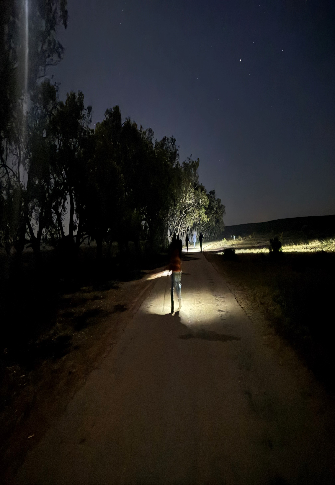
4.1 Spatial Scale and Resolution
Monitoring is done at fine spatial resolutions for management purposes. For habitat and land cover indicators, high-resolution satellite imagery (Sentinel-2 and Landsat) with at least 30 m resolution is used, which enables us to identify changes in specific areas.
4.2 Data Management and Quality Control
All collected data will be added to a centralised Biodiversity Monitoring Database that is maintained by the municipality. This will be a GIS-linked database for spatial data and spreadsheets or a database for indicator values over time. To ensure that the data is of good quality and is consistent:
- Standard data collection protocols will be documented for each indicator. It will give directions on how to sample water quality following SAB standards, or how to do a fixed-point photo monitoring of a habitat (SBM 2025). Field teams will be trained on how to perform these methods. Where it is possible, the methods will follow national or international standards — for example, the SANBI Threatened Species Program protocols for species surveys, or the CapeNature's Invasive Alien Plant monitoring forms.
- Each data point will have to undergo verification. For example, when conducting remote sensing classifications, ground-truth site visits will have to be made; species identifications from citizen observations will be verified by experts or through photographs; water samples will undergo lab analysis to ensure their accuracy.
- The metadata for each indicator will be kept and maintained, aligning with the KMGFB indicator standards. This makes the data usable for higher-level reporting. For example, if the national government requires local data for reporting on SDG 15 or CBD targets, the metadata will inform of how Saldanha's figures were obtained.
This methodology draws on successful models that have been implemented elsewhere. The Arctic Council's Circumpolar Biodiversity Monitoring Program (CBMP) showed that having consistent monitoring protocols across regions and linking them to global indicators can be of great value. This protocol for Saldanha Bay is drawn to be compatible with national biodiversity monitoring frameworks. The data collected can feed into South Africa's Environmental Outlook reports, provincial state of environment reports, and the national biodiversity assessment.
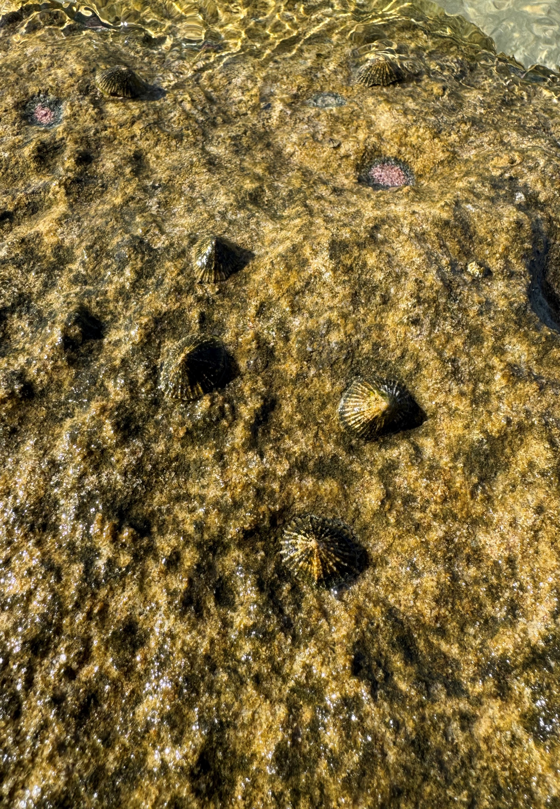
The protocol establishes clear reporting structures to translate monitoring results into informative products that can be used by decision makers and stakeholders. Moreover, it adds an adaptive management cycle so that the findings can lead to adjustments in strategies and on-ground actions.
5.1 Annual & Five-Year Reports
The municipality will make a biodiversity monitoring report on a fixed cycle, which is to be proposed annually, with a comprehensive review every 5 years (to align with the SDF and Integrated Development Plan cycle). The annual report will be concise, focusing on the indicator updates for the year, changes that occurred and any red flags that arise. It will include data visualisations to clarify most of the complex data. Every five years, a detailed State of Biodiversity report will be published, which analyses long-term trends, evaluates the progress towards SDF biodiversity targets, and recommends policy revision if necessary.
The process of reporting will be integrated into existing municipal processes. The annual monitoring results can be incorporated into the Integrated Development Plan (IDP) performance review, under the environmental sustainability objectives. The reports will be shared with the municipal council's planning and environment portfolio committees so that the elected officials are kept aware of biodiversity outcomes. This is drawn from the CBD's call for "linking monitoring to planning, reporting and review" as a means to enhance transparency and accountability.
5.2 Digital Indicator Dashboard
A digital Biodiversity Indicator Dashboard on the municipality's website can be another way to report ongoing oversights. This interface can be user-friendly, showing traffic light status for each indicator, with green representing targets on track, orange representing some concern, and red representing serious deterioration. Having such a feature or tool keeps managers informed in real time, and it also keeps the public informed in an accessible way. The dashboard would be updated as data comes in. It is important to note that caution will be taken to contextualise data, where each indicator would have to have a description and explanation to avoid any misinterpretations by the public.
5.3 Adaptive-management Review Cycle
Saldanha Bay Municipality will make an annual Biodiversity Management Review meeting, following or during the release of the monitoring report. In this meeting, municipal officials (from environment, planning, and infrastructure departments) and external stakeholders (CapeNature, SANParks, NGOs, community representatives) will discuss the results. Using the indicators, they will assess which of the targets have been met throughout the year and which are lagging.
The annual Biodiversity Report will be published on the municipal website and summary findings communicated via press release or community newsletters, or public meetings can be used to share important information.
Early results from implementing the monitoring protocol underscore both achievements and areas of concern, providing a clear basis for policy action. On the positive side, the municipality retains a substantial natural heritage — over half of its area is still covered in natural vegetation, and important sites like Langebaan Lagoon enjoy formal protection and international recognition. This indicates a strong foundation to build upon. However, trends show mounting pressures: habitat loss is ongoing at the fringes of towns and farms, invasive species remain a persistent threat (with some high value conservation lands at risk of being overrun), and wildfire patterns suggest increasing risk of ecosystem destabilization. The data highlight geographic hotspots that demand attention — for instance, the inland eastern corridor (around Hopefield–Vredenburg) emerges as a conflict zone where biodiversity-rich Strandveld intersects with expanding agriculture and industry, necessitating careful spatial planning and offsets. Invasive plant density maps point to the Besaansklip–Langebaan Road area as needing urgent clearing to protect the core ecological corridor. Wetland and water quality monitoring indicate generally acceptable conditions in most areas, but some signs of nutrient enrichment in urban-adjacent lagoons and estuaries call for improved pollution control.
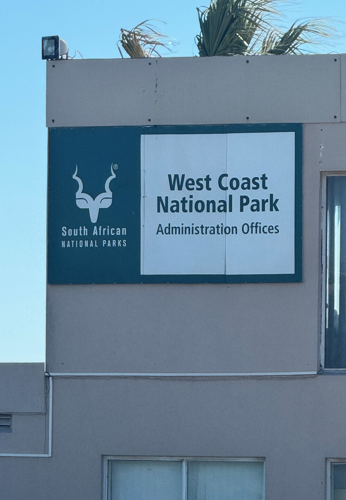
In order to have effective Biodiversity Monitoring and Management in SBM, there needs to be a strong institutional coordination and a sound data governance. Biodiversity issues can cut across administrative boundaries in the municipality, so a collaborative approach is essential. This final section outlines the roles of various institutions, mechanisms for coordination, and how data will be managed and shared.
6.1 Institutional Roles and Collaboration
Saldanha Bay Municipality's Environmental Management division will be the lead coordinator of the monitoring program, responsible for data collection oversight, report compilation, and hosting the adaptive management meetings. The Town Planning division will use the findings in land-use decision making by using CBA maps and indicator trends when evaluating development applications. Other municipal departments will add relevant data. The municipality council will endorse the protocol and ensure alignment with the IDP and budget.
Since Saldanha Bay is part of the larger West Coast District, the district environmental officers can facilitate a broader perspective and resource support. The district IDP and Environmental Management Forum can be platforms where Saldanha shares its biodiversity outcomes and learns from other municipalities that neighbour it — like the Berg River or Swartland — which share some ecosystems. Having coordination with neighbouring municipalities would be useful for things like ecological corridors crossing municipal boundaries and for implementing offset areas in neighbouring municipalities.
It is recommended that the municipality of Saldanha Bay form a Biodiversity Monitoring Steering Committee. This committee would include representatives from the municipality, CapeNature, SANParks, provincial DEA&DP, local NGOs, and industry environmental managers. Its purpose is to oversee implementation of the monitoring program, troubleshoot any issues like the lack of capacity or data gaps, and facilitate data and resource sharing. It can also ensure that the monitoring remains policy relevant.
6.2 Data Governance & Upward Reporting
The data governance will ensure that Saldanha Bay's data feeds upwards into the national system and outwards to the global community. As stated before, the metadata will indicate how the local indicators correspond to SDG global indicators and KMGFB indicators, which will make it easy to uptake in national reports. This can turn Saldanha into a case study that demonstrates local implementation of global frameworks. The literature surveys by Biodiversa+ (2022) stated that multi-level information flow is important (Local → National → Global), which Saldanha's protocol is designed in that spirit.
Finally, institutionalising this protocol within the municipality operations is key to its longevity. The roles and processes described should be encoded in municipal policy. This would help in securing the budget allocations and ensure that there is continuity even if personnel change. Training programs will be provided to municipal staff to build the capacity in data collection and interpretation. Partnerships with universities can keep the science top notch and even provide student interns to assist with monitoring while training the next generation.
References
- Arctic Council (2011) Arctic Marine Biodiversity Monitoring Plan. CAFF Monitoring Series Report No. 3. Akureyri, Iceland: Conservation of Arctic Flora and Fauna (CAFF).
- Arctic Council (2013) Arctic Terrestrial Biodiversity Monitoring Plan. CAFF Monitoring Series Report No. 7. Akureyri, Iceland: Conservation of Arctic Flora and Fauna (CAFF).
- CapeNature & Western Cape Department of Environmental Affairs and Development Planning (2017) Western Cape Biodiversity Spatial Plan Handbook. Cape Town: CapeNature.
- CBD (2022) Kunming-Montreal Global Biodiversity Framework. Montreal: Convention on Biological Diversity Secretariat.
- Department of Agriculture, Land Reform and Rural Development (2022) South African National Land-Cover (SANLC) 2020 dataset. Pretoria: DALRRD.
- Saldanha Bay Municipality (2025) Spatial Development Framework 2025–2030 (final draft). Vredenburg: SBM.
- SANBI (2016) South Africa's National Biodiversity Strategy and Action Plan 2015–2025. Pretoria: South African National Biodiversity Institute.
- SBWQFT (2024) State of Saldanha Bay and Langebaan Lagoon: Annual Monitoring Report 2024. Saldanha Bay: Saldanha Bay Water Quality Forum Trust.
- South African National Parks (SANParks) (2025) West Coast National Park: Draft management plan 2025–2035. Pretoria: SANParks.